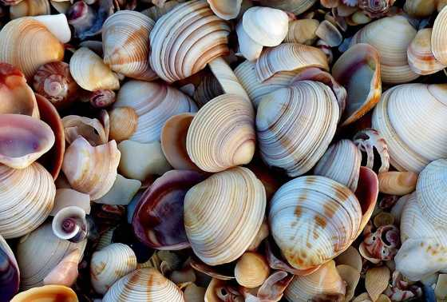
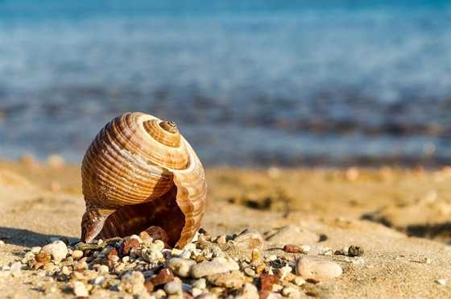
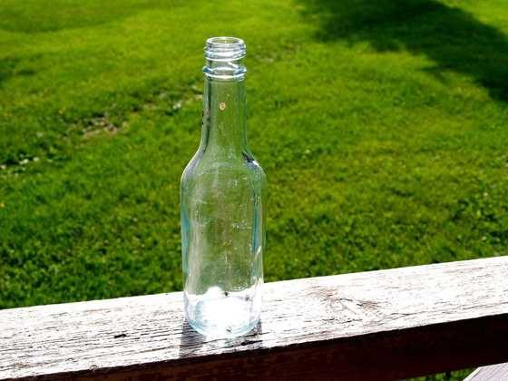
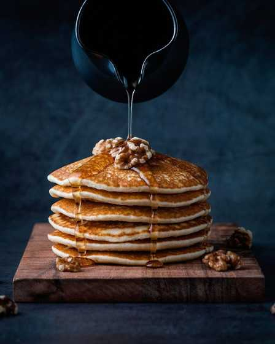

沖縄県久米島町・比嘉
白いコンテナのそばで、
ひと息、笑顔に戻る。
サトウキビ畑と住宅街のあいだ。コンテナ横のテラスで過ごす、コーヒーの小さな休憩所です。
お店のこと
日常の中で、少しだけ立ち止まれる場所。
紹介記事によると、smile aid trunk(スマイル エイド トランク)は、久米島町比嘉の国道89号線沿い、ドラッグストアから一本奥の通りにある白いコンテナのカフェです。住宅街とサトウキビ畑の境目にあり、ドライブ中に見える白いコンテナが目印とされています。
注文と受け取りはコンテナの窓口で行い、店内に飲食スペースはなく、コンテナ横のテラスにあるキャンプ風のチェアとテーブルで過ごします。空き地には芝を張る予定で、子どもが遊びながら過ごせる場所にしていくこと、今後は夜営業(アウトドア風の夜カフェバー)も計画されていると紹介されています。
情報源: 久米島の新しいお店「Smile aid Trunk」(久米島ICO・2025年11月)/Instagram
店名の意味や開業の経緯は確認できていません。「ひと息つく」「笑顔」といった言い回しは、店名と紹介記事から受けた制作側のイメージです。

イメージ
風と日ざしと、あたたかい一杯。
写真は、島の空気感を伝えるフリー素材です。お店の実際の様子や提供品そのものではありません。






メニュー
コーヒーを中心に。
紹介記事で確認できた内容です(2025年11月時点。変更されている場合があります)。最新の内容と価格は、Instagramで案内されているとのことです。




口コミ
こんな声が届くお店に(イメージ例)
以下は制作側が作成したイメージ例で、実在のお客様の声ではありません。
テラスの椅子でゆっくりできて、旅の合間にほっとしました。
デカフェを選べるのが嬉しい。夕方でも気兼ねなく飲めます。
子どもと一緒でも気楽に過ごせて、また寄りたくなりました。
アクセス
ご案内
| 所在地 | 〒901-3108 沖縄県島尻郡久米島町比嘉99-11 |
|---|---|
| 目印 | 国道89号線沿いのドラッグストアから一本奥の通り、白いコンテナ(紹介記事より) |
| 電話 | 準備中 |
| 営業時間 | 準備中 |
| 定休日 | 準備中 |
| SNS | Instagram @smileaidtrunk |
営業時間・定休日・価格は変更されることがあるため、掲載せず「準備中」としています。最新情報はInstagramをご覧ください。